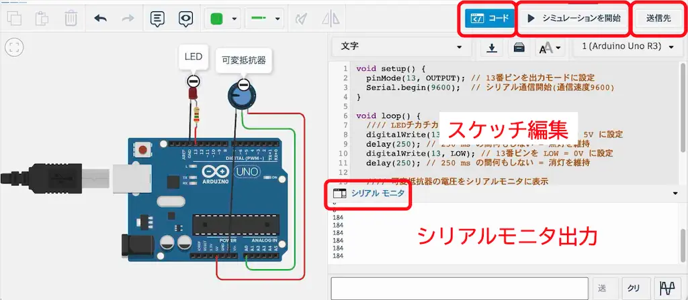
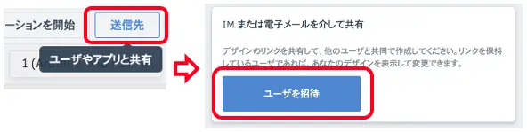

TinkercadでArduinoシミュレーション
TinkercadはAutodesk社が提供するブラウザベースのCADサービスである． 一部の商用利用を除いて無料で利用できる． ここでは，回路設計機能を使って，Arduinoマイコンの動作シミュレーションを行う方法を紹介する．
Tinkercadにログインする
Tinkercadにアクセスしてログインする． アカウントを持っていない場合は，サインアップから新規アカウントを作成する． クラスルームという特殊なリンク経由で参加する機能もあるが，ここでは個人で使用するための「パーソナルアカウント」を作成する．
他サービスのアカウントと紐づけてもよいし，メールアドレスを使って新規に登録してもよい．居住地と誕生日を聞かれるが，法的な確認のためと思われる．
リンク共有された回路を開く
マイページから デザイン > 回路 を選ぶと，回路設計・シミュレーション機能を利用できる． あらかじめ，ArduinoにLEDと可変抵抗を接続した回路を作成しておいた． ログインした状態で上記リンクを開き，「コピーして編集」を選択するとArduinoに書き込むコードや回路を編集できる．

スケッチ編集
今回は回路の編集は行わず，Arduinoスケッチ1のみ編集する． 回路を編集する場合は，GUIで素子を追加したり配線を接続したりする．
右上の「コード」ボタンを押すと，回路素子画面とスケッチ編集画面を切り替えられる． 初期状態では下記のスケッチが実装されているので，これを書き換えて所望の動作を実現する．
void setup() {
pinMode(13, OUTPUT); // 13番ピンを出力モードに設定
Serial.begin(9600); // シリアル通信開始(通信速度9600)
}
void loop() {
//// LEDチカチカ
digitalWrite(13, HIGH); // 13番ピンを HIGH = 5V に設定
delay(250); // 250 ms の間何もしない = 点灯を維持
digitalWrite(13, LOW); // 13番ピンを LOW = 0V に設定
delay(250); // 250 ms の間何もしない = 消灯を維持
//// 可変抵抗器の電圧をシリアルモニタに表示
int sliderValue = analogRead(0); //A0ピンの電圧値を読む
Serial.println(sliderValue); //電圧値をモニタに出力
}シミュレーション
スケッチを含めた回路の動作は，右上の「シミュレーション」ボタンを押すとアニメーションで描画される． 例えば，9行目の250を小さな値に書き換えると，13番ピンの電圧がHIGHである時間が短くなり，LEDが点灯している時間が短くなることが確認できる．
14行目で読み取った可変抵抗の電圧値は，int型変数sliderValueに代入され，15行目でシリアル通信される． 実機ではArduinoからUSBで接続されたPCに情報が送信される． Tinkercadでは，通信された内容を右下の「シリアルモニタ」ウィンドウで確認できる． 実機ではPC上のArduino IDEにシリアルモニタが備わっている．
動作を確認できたら，シミュレーションを停止させ，必要な編集を続けよう．
編集結果を共有
納得いくものができたら，右上の「送信先」ボタンから共有可能なURLを発行しよう． 「送信先」＞「ユーザを招待」とたどると，URLが表示される．

Footnotes
Arduinoに書き込むプログラムのこと．↩︎